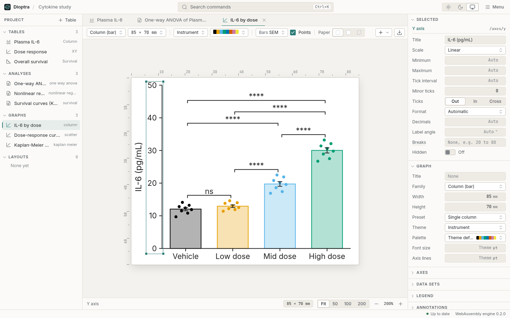
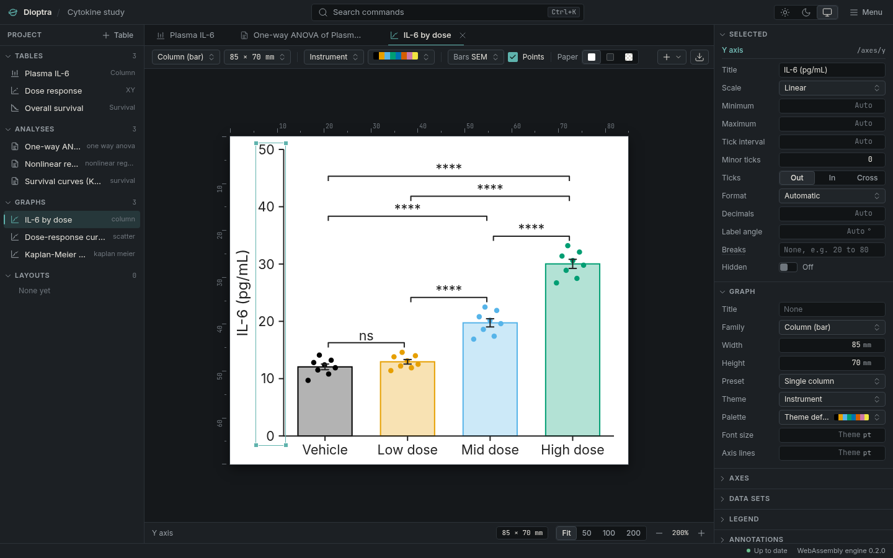
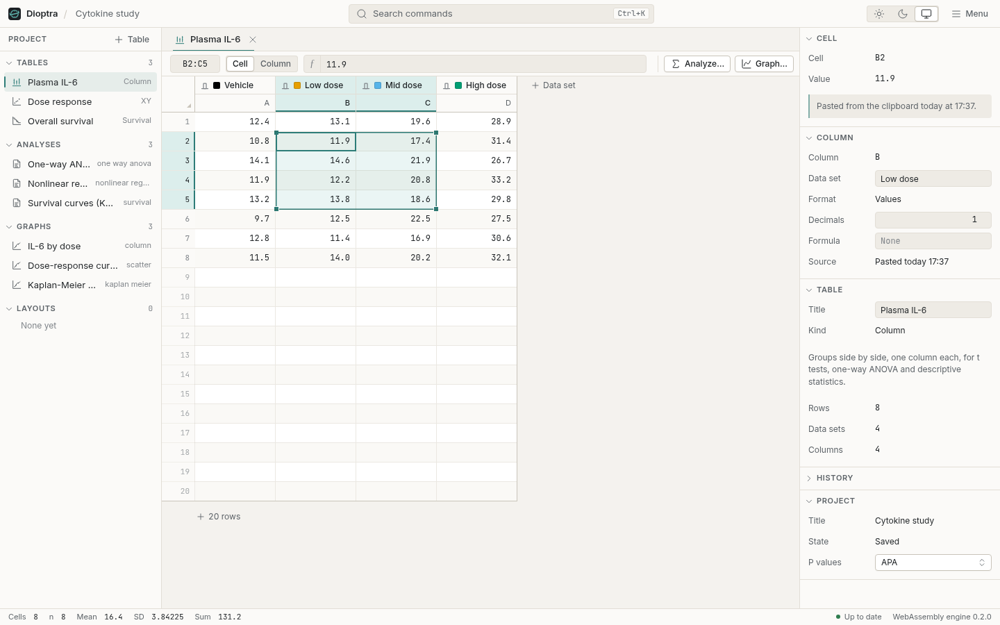
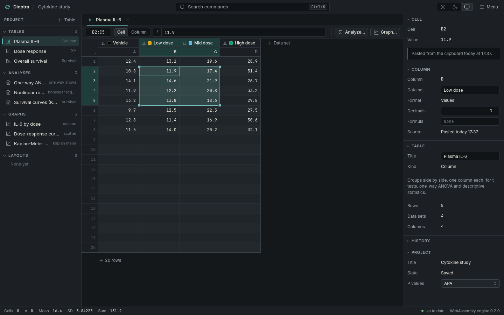
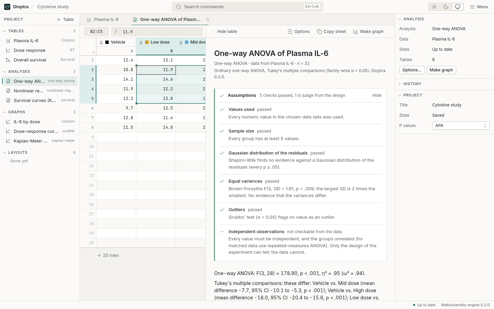
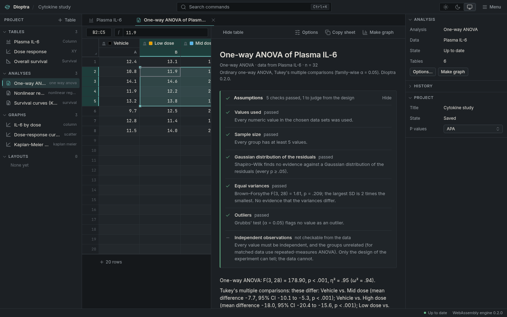
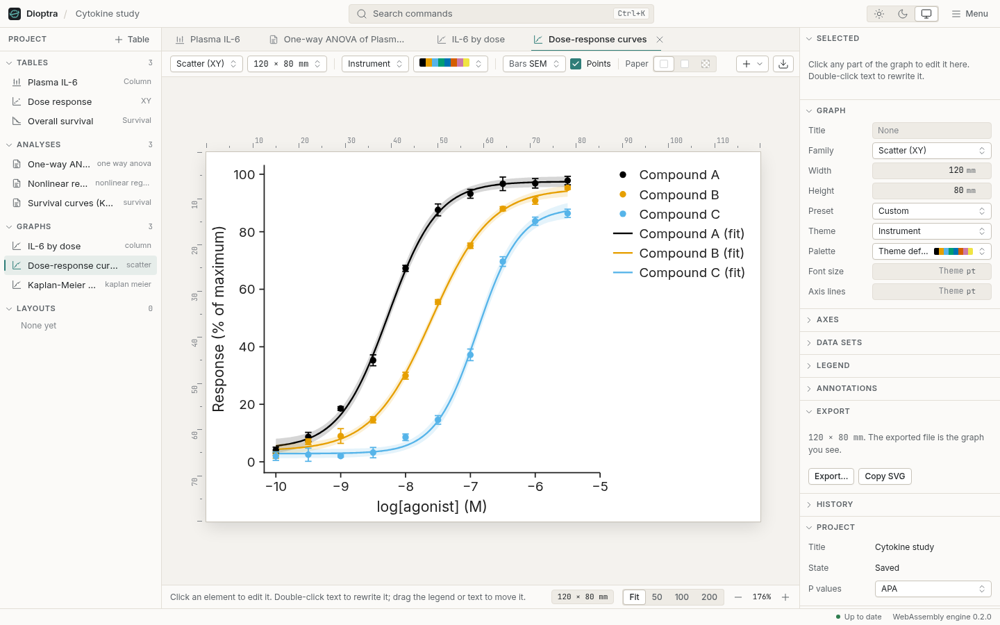
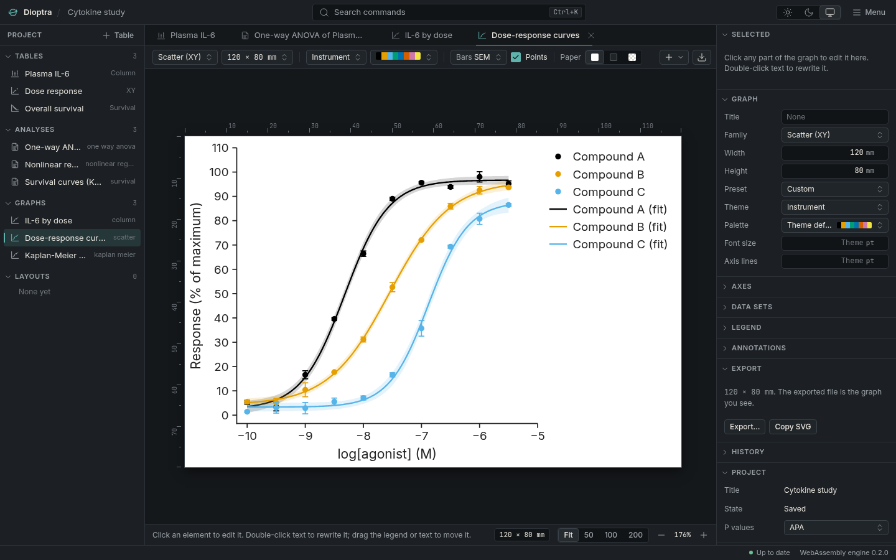
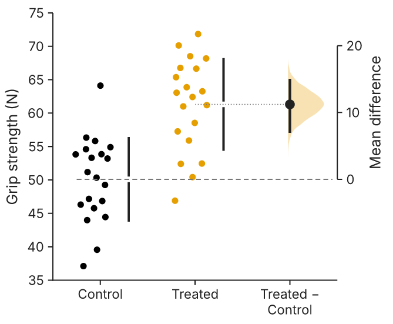

Linux
One file for any distribution, or a package for yours.
AppImageFree and open source · Linux, Windows, macOS
Dioptra is a desktop program for scientific data. Paste raw numbers, shape them with formulas, run the test with its assumptions checked in plain view, and export the figure at the size the journal asks for. It does the work of GraphPad Prism and of the spreadsheet you opened before it, and keeps every step in one open file.
Download Dioptra Read the ten-minute start


01 Download
Every file is on the releases page.
One file for any distribution, or a package for yours.
AppImageWindows 10 and 11, 64-bit.
Installer (.msi)Choose the build for your processor.
Apple silicon (.dmg)The builds are not signed with a paid certificate, so Windows and macOS ask once before the first launch. The install notes say what to click.
02 The instrument






03 No spreadsheet in the loop
The usual route goes through a spreadsheet. The plate reader exports a file, the file opens in Excel, someone tidies it, and the tidy version is pasted into the statistics program. Each step is a chance to change the data without noticing.
The spreadsheet reads the gene SEPT2 as the second of September and
MARCH1 as a date in March. In 2016 about a fifth of papers that published
gene lists from Excel had such errors; in 2021 the share was higher. Copy a block from
the spreadsheet and the clipboard carries the rounded numbers it was displaying, not
the ones it stored. Then the data are reshaped by hand to fit the next program's
layout, and the baseline is subtracted in one column and forgotten in the next.
Dioptra takes the spreadsheet's jobs so there is nothing to round-trip:
1,234, is kept as text and shown, not guessed.<LOD is never a zero.04 Honest by default
Equal variances: Brown–Forsythe, p = .03. The groups' spreads differ; Welch's test, used here, does not assume they are equal.
Welch's t test: the means differ by 3.2 units (95% CI 1.1 to 5.3), t(17.4) = 3.21, p = .005.
05 Publication-ready

06 Correct, and shown to be
The engine is checked against the NIST Statistical Reference Datasets, whose answers are certified to 15 digits, and against SciPy, statsmodels, lifelines and scikit-learn. Each check counts correct digits, and the whole record is published.
Where a certified answer cannot be reached in double precision because the inputs themselves cannot be stored exactly in binary (such as 1000000.1), the record says so and shows the comparison against exact arithmetic on the stored values. Read the correctness record.
07 Open
.dioptra project is a zip of documented JSON: data, formulas, analysis and graph specifications, and the history of every command.$ unzip -l assay.dioptra
manifest.json
project.json
tables/t1.json
analyses/a1.json
graphs/g1.json
history.jsonl